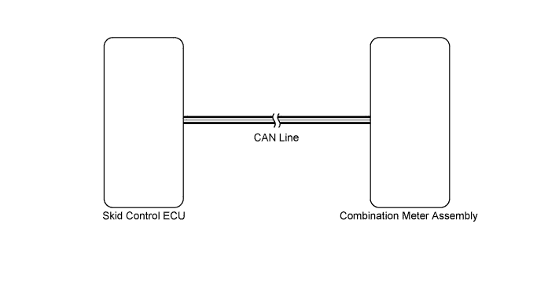

DTC U0129 Lost Communication with Brake System Control Module |
| DTC Code | DTC Detection Condition | Trouble Area |
| U0129 | When 15 seconds have elapsed after the engine is started and IG voltage is 10.5 V or more while no communication with the skid control ECU continues for 3 seconds or more (no communication with the ECM or skid control ECU continues for 60 seconds or more). | CAN communication system |

| 1.CHECK FOR DTC |
Check for DTCs and note any codes that are output (Click here).
Clear the DTCs (Click here).
Recheck for DTCs (Click here).
| Result | Proceed to |
| CAN communication system DTC is not output | A |
| CAN communication system (for LHD) DTC is output | B |
| CAN communication system (for RHD) DTC is output | C |
|
| ||||
|
| ||||
| A | ||
| ||